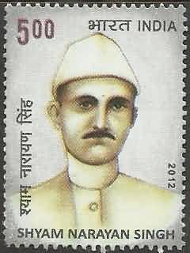

India has a long and varied postal history and has produced a large number of postage stamps. These have been produced by a variety of techniques including line engraving, typography, lithography, photogravure, and web-offset. Stamps have been produced both for postage and for service or revenue. Definitives and commemoratives have been issued...
Indian Stamp
"I love the rebelliousness of snail mail, and I love anything that can arrive with a postage stamp.
There's something about that person's breath and hands on the letter."
- Diane Lane

Revenue Stamp
Definitive Stamp
